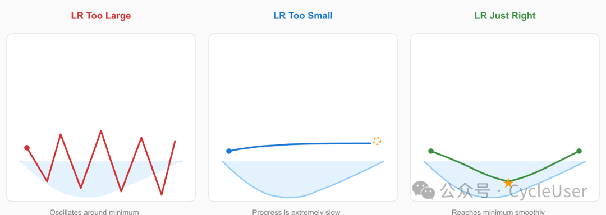
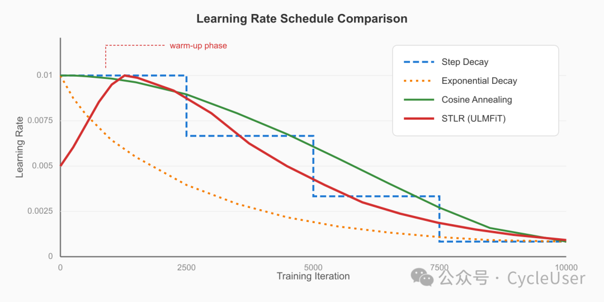
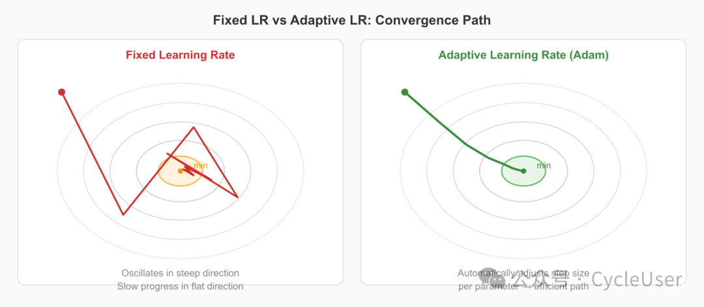
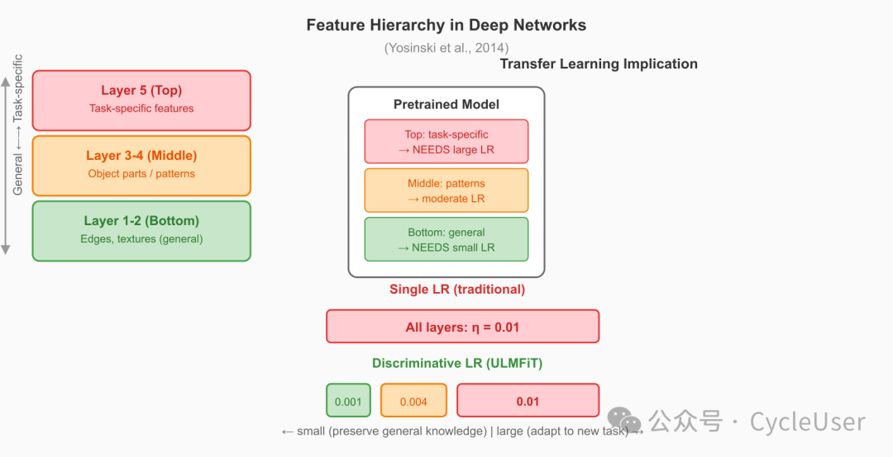
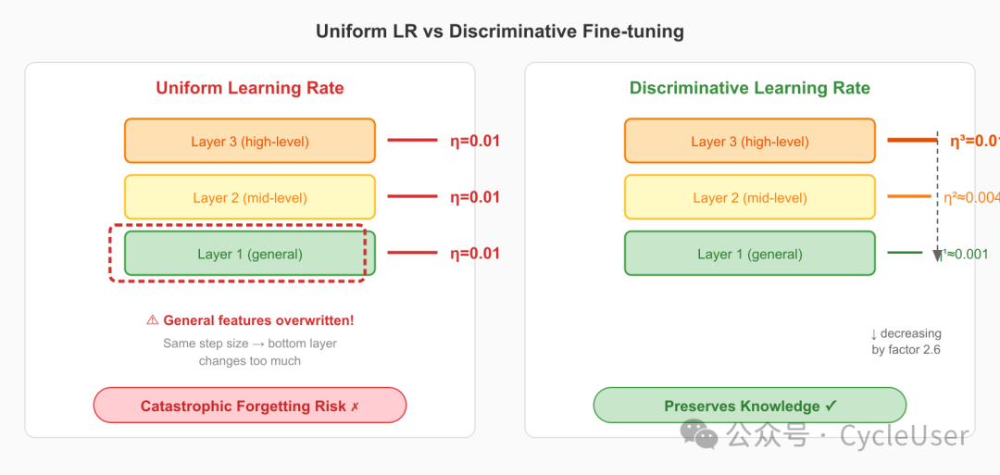
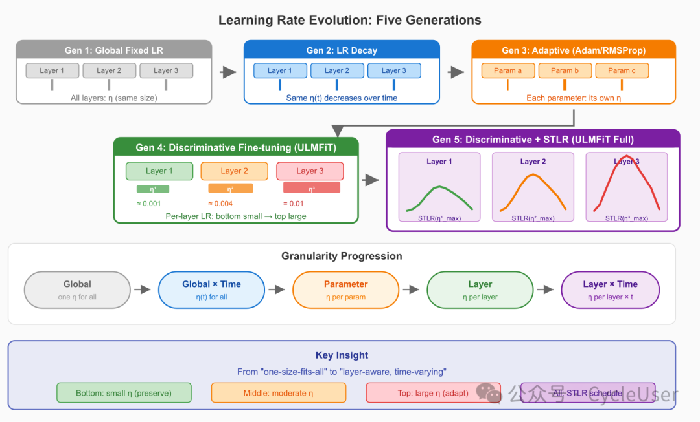
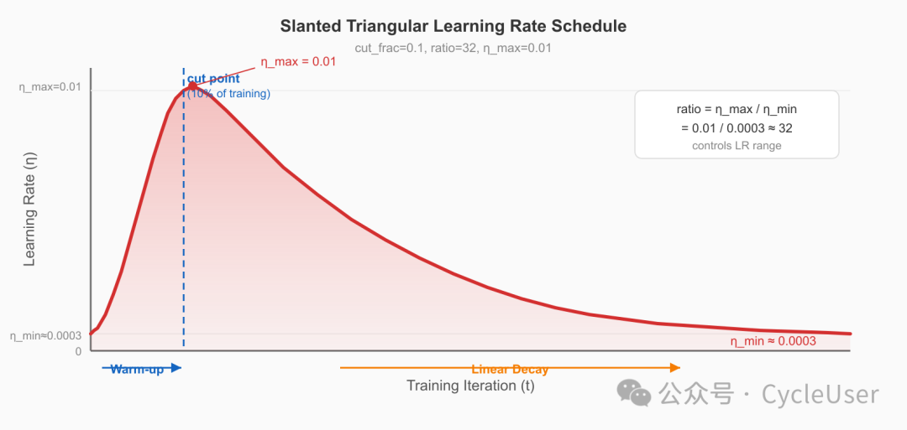
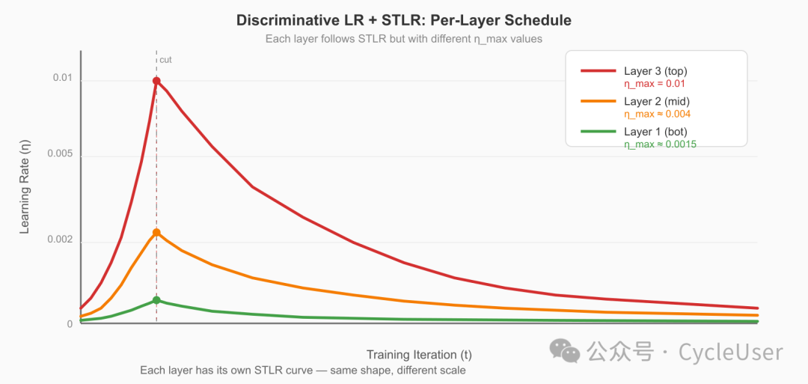

最近几天有同学在尝试自己训练一些小模型，其中有的环节使用了全局学习率的设置，经过询问得知他们没有考虑做逐层的学习率调整。
所以整理几篇文章，粗略地从随机梯度下降到判别式微调，大概介绍一下学习率如何一步步走向"因层制宜"的。
1. 什么是学习率？
训练神经网络，本质上是在参数空间中寻找最低点——让损失函数 尽可能小。这个过程就像一个人蒙着眼睛下山：
每一步迈多大？这个"步幅"，就是学习率（Learning Rate, ）。
数学上，最朴素的梯度下降更新规则是这样的：
其中：
- 是第 步的参数
- 是损失函数对参数的梯度（下坡方向）
- 是学习率（步幅）

图 1：学习率的直觉——太大则震荡，太小则爬行。 左图学习率过大，在谷底来回震荡；中图学习率过小，进度缓慢；右图学习率恰当，稳步到达谷底。
学习率的选择直接决定了训练的成败。Andrew Ng 曾用一张经典图说明：学习率太大导致发散，太小导致训练极慢。这看似简单的超参数，却是深度学习中最重要也最难调的一个。
2. 学习率简史：从固定到动态
2.1 第一代：固定学习率（Fixed LR）
最早的 SGD 使用一个全局固定的学习率，从头到尾不变：
代码很简洁：
# Fixed learning rate SGD
lr = 0.01 # 全局固定学习率
for epoch in range(num_epochs):
for x, y in dataloader:
loss = model(x, y)
loss.backward()
for param in model.parameters():
param.data -= lr * param.grad
问题很明显：训练初期需要大步探索，后期需要小步精调。固定学习率无法兼顾这两个需求。
2.2 第二代：学习率衰减（LR Decay）
人们很快想到：让学习率随时间逐渐变小。
常见的衰减策略：
| 策略 | 公式 | 特点 |
|---|---|---|
| 阶梯衰减 | 每 步乘以 | |
| 指数衰减 | 连续平滑衰减 | |
| 余弦退火 | 平滑过渡，周期性 | |
| 衰减 | 理论保证收敛 |
# Step decay
def get_lr(epoch, init_lr=0.01, gamma=0.1, step_size=30):
return init_lr * (gamma ** (epoch // step_size))
# Cosine annealing
import math
def cosine_lr(epoch, T, eta_min=1e-5, eta_max=0.01):
return eta_min + 0.5 * (eta_max - eta_min) * (1 + math.cos(math.pi * epoch / T))

LR Schedules Comparison
图 2：不同学习率调度策略的对比。 阶梯衰减跳跃式下降；指数衰减连续但陡峭；余弦退火平滑过渡。每种策略都在"训练初期快走、后期慢走"这个核心思想上做文章。
2.3 第三代：自适应学习率（Adaptive LR）
衰减策略虽然有效，但有一个根本问题：所有参数共享同一个学习率。
2012-2015 年间，一批革命性的优化器出现了——它们为每个参数计算不同的学习率：
AdaGrad（2011）：累计历史梯度平方，自适应缩放
RMSProp（2012）：用指数移动平均替代全量累计
Adam（2015）：结合动量和自适应，成为最流行的优化器
# Simplified Adam optimizer
class Adam:
def __init__(self, params, lr=0.001, betas=(0.9, 0.999)):
self.lr = lr
self.beta1, self.beta2 = betas
self.m = [torch.zeros_like(p) for p in params] # 1st moment
self.v = [torch.zeros_like(p) for p in params] # 2nd moment
def step(self, params, grads, t):
for i, (param, grad) in enumerate(zip(params, grads)):
self.m[i] = self.beta1 * self.m[i] + (1 - self.beta1) * grad
self.v[i] = self.beta2 * self.v[i] + (1 - self.beta2) * grad**2
m_hat = self.m[i] / (1 - self.beta1**t) # bias correction
v_hat = self.v[i] / (1 - self.beta2**t) # bias correction
param.data -= self.lr * m_hat / (v_hat.sqrt() + 1e-8)

Adaptive vs Fixed LR
图 3：自适应学习率 vs 固定学习率。 自适应方法（右）在梯度大的方向减速，梯度小的方向加速，从而走出更高效的路径到达最优点。固定学习率（左）则可能在不平坦的损失面上走弯路。
关键进步：自适应优化器实现了 参数级 的学习率差异化，但它们没有考虑一个重要维度——层（Layer）。
3. 问题的根源：为什么不同层需要不同学习率？
3.1 深度网络的层，学的东西不一样
Yosinski et al. (2014) 的经典实验揭示了一个重要事实：
深度网络的不同层捕获不同层次的特征——底层捕获通用特征，高层捕获任务特定特征。

Layer Feature Hierarchy
图 4：深度网络各层学习的特征层次。 底层（Layer 1-2）学习边缘、纹理等通用特征，与任务关系不大；中层（Layer 3-4）学习部件和模式；顶层（Layer 5）学习与任务直接相关的高级概念。
这一发现对迁移学习至关重要：
- 底层特征更通用，不需要大幅修改
- 高层特征更特定，需要更多调整
3.2 全局单一学习率的问题
想象一个迁移学习场景：用 ImageNet 预训练模型微调到医学影像任务。
如果所有层共享学习率 ：
| 学习率设置 | 底层（通用特征） | 高层（任务特定） | 结果 |
|---|---|---|---|
| 太大 | 通用特征被破坏 | 学习速度快 | 灾难性遗忘 |
| 太小 | 通用特征保留 | 学习速度太慢 | 收敛极慢 |
| 适中 | 部分破坏 | 部分学习 | 两头不讨好 |
这就是不可能三角：不存在一个全局学习率，能同时满足底层"小改"、高层"大改"的需求。
4. 判别式微调：每层一个学习率
4.1 核心思想
ULMFiT 论文提出的判别式微调（Discriminative Fine-tuning），核心思想极其简洁：
让每一层拥有自己的学习率，底层小、高层大。
形式化地说，将模型参数按层分组 ，每层有独立的学习率：
其中 是第 层的学习率。
4.2 从全局到逐层：数学对比
全局单一学习率的 SGD：
展开写就是：
所有层共用 ，一视同仁。
判别式微调的 SGD：
小（底层，微调）
中（中层，适度调整）
大（顶层，大幅更新）

Discriminative vs Uniform LR
图 5：全局单一学习率 vs 判别式微调。 左图：所有层使用相同学习率，底层特征被过度修改（红色警告）。右图：判别式微调为每层分配不同学习率，底层小幅调整保留通用知识，高层大幅更新适应新任务。
4.3 学习率如何确定？
ULMFiT 用了一个巧妙的递减策略：
即：先确定最后一层的学习率 （通过仅微调最后一层来确定），然后每往下一层，学习率缩小为上层的 。
举例：对于 3 层 LSTM
（最后一层，任务特定头，最大学习率）
（中间层）
（底层，最通用特征，最小学习率）
# Discriminative fine-tuning in PyTorch
import torch
def get_discriminative_lrs(model, base_lr=0.01, decay_factor=2.6):
"""
Compute per-layer learning rates for discriminative fine-tuning.
Args:
model: a model with L layers
base_lr: learning rate for the LAST layer
decay_factor: each lower layer's LR = upper layer's LR / decay_factor
Returns:
list of (param_group, lr) tuples
"""
layers = list(model.children()) # e.g., [layer1, layer2, layer3]
num_layers = len(layers)
param_groups = []
for i, layer in enumerate(layers):
# Layer index: 0 = bottom (smallest LR), L-1 = top (largest LR)
lr = base_lr / (decay_factor ** (num_layers - 1 - i))
param_groups.append({
'params': layer.parameters(),
'lr': lr
})
return param_groups
# Usage example
model = ThreeLayerLSTM() # AWD-LSTM with 3 layers
param_groups = get_discriminative_lrs(model, base_lr=0.01, decay_factor=2.6)
# Layer 1 (bottom): lr ≈ 0.00148
# Layer 2 (middle): lr ≈ 0.00385
# Layer 3 (top): lr = 0.01
optimizer = torch.optim.Adam(param_groups)
4.4 更精细的实现
在实际代码中，我们需要区分不同类型的参数（Embedding、RNN 层、分类器头等）：
import torch.nn as nn
import torch.optim as optim
class ULMPfinetuner:
def __init__(self, model, base_lr=0.01, decay_factor=2.6):
self.model = model
self.base_lr = base_lr
self.decay_factor = decay_factor
def get_param_groups(self):
"""
Build parameter groups with discriminative learning rates.
Architecture (bottom to top):
- Embedding layer: smallest LR (most general)
- RNN layer 1:
- RNN layer 2:
- RNN layer 3:
- Classifier head: largest LR (most task-specific)
"""
layer_names = [
'embedding', # most general
'rnn_layer_0',
'rnn_layer_1',
'rnn_layer_2',
'classifier', # most task-specific
]
param_groups = []
for i, name in enumerate(layer_names):
lr = self.base_lr / (self.decay_factor ** (len(layer_names) - 1 - i))
module = getattr(self.model, name)
param_groups.append({
'params': list(module.parameters()),
'lr': lr,
'name': name,
})
print(f" {name:20s} lr = {lr:.6f}")
return param_groups
# Instantiate and train
finetuner = ULMPfinetuner(model, base_lr=0.01, decay_factor=2.6)
optimizer = optim.Adam(finetuner.get_param_groups())
for epoch in range(num_epochs):
for batch in dataloader:
loss = compute_loss(model, batch)
loss.backward()
optimizer.step()
optimizer.zero_grad()
5. 从全局到逐层：学习率演化全景图
让我们回顾一下学习率从最简单到最精巧的完整演化路径：

Learning Rate Evolution
图 6：学习率五代演化全景图。 从全局固定（Gen 1）→ 全局调度（Gen 2）→ 参数级自适应（Gen 3）→ 层级差异化（Gen 4）→ 层级+时间联合调度（Gen 5）。底部展示粒度递进：Global → Global×Time → Parameter → Layer → Layer×Time。
6. 为什么 2.6？深入理解衰减因子
ULMFiT 实验发现 是一个有效的衰减因子。这个数字并非随意选择，背后有直觉支撑：
理由 1：指数衰减确保底层几乎不被改动
如果模型有 3 层，顶层学习率为 ：
| 层 | 学习率 | 相对顶层 |
|---|---|---|
| 底层 (Layer 1) | 0.01 / 2.6² ≈ 0.00148 | ~1/6.76 |
| 中层 (Layer 2) | 0.01 / 2.6 ≈ 0.00385 | ~1/2.6 |
| 顶层 (Layer 3) | 0.01 | 1× |
底层学习率仅为顶层的约 15%，这意味着底层参数的更新幅度被大幅压缩，预训练学到的通用知识得以保留。
理由 2：与梯度量级的自然匹配
深度网络中，底层梯度经过反向传播的多步乘法后，通常比高层梯度更大（梯度爆炸的趋势）或更不稳定。较小的学习率恰好补偿了底层可能更大的梯度量级，使得参数更新的绝对幅度趋于合理。
理由 3：经验验证
ULMFiT 的消融实验清楚地证明了判别式微调的效果：
| 方法 | IMDb | TREC-6 | AG |
|---|---|---|---|
| Full（全局单一学习率微调） | 5.86 | 6.54 | 5.61 |
| Full + discr（判别式微调） | 5.55 | 6.36 | 5.47 |
在所有三个数据集上，判别式微调都带来了错误率的降低。
7. 学习率的下一步：倾斜三角学习率（STLR）
判别式微调解决了"不同层需要不同学习率"的问题，但还有一个问题没解决：
同一层的学习率，在训练的不同阶段也应该不同。
ULMFiT 同时提出了倾斜三角学习率（Slanted Triangular Learning Rate, STLR），让每层的学习率随时间先升后降：
默认参数：，，。
import numpy as np
import matplotlib.pyplot as plt
def slanted_triangular_lr(t, T, eta_max=0.01, cut_frac=0.1, ratio=32):
"""
Slanted Triangular Learning Rate (STLR) schedule.
Phase 1 (t < cut): LR linearly increases from eta_max/ratio to eta_max
Phase 2 (t >= cut): LR linearly decreases from eta_max to eta_max/ratio
Args:
t: current iteration
T: total number of training iterations
eta_max: maximum learning rate
cut_frac: fraction of iterations to increase LR
ratio: how much smaller the min LR is vs max LR
"""
cut = int(T * cut_frac)
if cut == 0:
cut = 1
if t < cut:
p = t / cut
else:
p = 1.0 - (t - cut) / (cut * (1.0 / cut_frac - 1.0))
return eta_max * (1.0 + p * (ratio - 1.0)) / ratio
# Visualization
T = 10000
iterations = np.arange(T)
lrs = [slanted_triangular_lr(t, T) for t in iterations]
plt.figure(figsize=(10, 4))
plt.plot(iterations, lrs, linewidth=2, color='#2196F3')
plt.xlabel('Training Iteration', fontsize=12)
plt.ylabel('Learning Rate', fontsize=12)
plt.title('Slanted Triangular Learning Rate', fontsize=14)
plt.axvline(x=int(T*0.1), color='red', linestyle='--', alpha=0.5, label='cut point')
plt.legend(fontsize=11)
plt.tight_layout()
plt.show()

STLR Schedule
图 7：倾斜三角学习率调度。 初始阶段快速增大学习率（warm-up），帮助模型快速进入参数空间合适区域；之后长时间缓慢衰减，精细调整参数。默认仅 10% 的训练步数用于 warm-up（红色虚线），其余 90% 用于精调。
STLR 的直觉
| 阶段 | 学习率 | 类比 |
|---|---|---|
| 增长期（前 10%） | 线性增大 | 到达新城市，先开车到大致区域 |
| 衰减期（后 90%） | 线性减小 | 到了大致区域后，步行精确定位 |
这与普通学习率衰减的区别是：先升后降，而不是单调下降。"先升"的阶段让模型快速适应新任务，避免在小学习率下卡在原参数空间的局部最优。
8. 判别式微调 + STLR：双剑合璧
ULMFiT 的真正威力在于判别式微调和 STLR 的叠加使用：
每一层有自己不同的学习率范围（判别式微调），同时每层的学习率又按照 STLR 的模式随时间变化。
具体来说，第 层在时间步 的学习率为：
其中 是第 层的最大学习率，按判别式微调的规则设定。
# Full ULMFiT learning rate: Discriminative + STLR
class ULMLearningRateScheduler:
def __init__(self, num_layers, T, base_lr_max=0.01,
decay_factor=2.6, cut_frac=0.1, ratio=32):
self.T = T
self.cut_frac = cut_frac
self.ratio = ratio
# Compute per-layer max learning rates (discriminative)
self.lr_max_per_layer = []
for layer_idx in range(num_layers):
lr_max = base_lr_max / (decay_factor ** (num_layers - 1 - layer_idx))
self.lr_max_per_layer.append(lr_max)
def get_lr(self, t, layer_idx):
"""Get learning rate for layer `layer_idx` at iteration `t`."""
eta_max = self.lr_max_per_layer[layer_idx]
return slanted_triangular_lr(
t, self.T,
eta_max=eta_max,
cut_frac=self.cut_frac,
ratio=self.ratio
)
# Example: 3-layer model
scheduler = ULMLearningRateScheduler(
num_layers=3,
T=10000,
base_lr_max=0.01, # top layer max LR
decay_factor=2.6,
)
# Print the learning rate ranges
for i in range(3):
lr_range = (scheduler.get_lr(1000, i), scheduler.get_lr(0, i))
print(f"Layer {i+1}: LR range = [{min(lr_range):.6f}, {max(lr_range):.6f}]")
# Output:
# Layer 1 (bottom): LR range ≈ [0.000046, 0.00148] ← smallest
# Layer 2 (middle): LR range ≈ [0.000120, 0.00385]
# Layer 3 (top): LR range ≈ [0.000313, 0.01000] ← largest

Combined LR Schedule
图 8：判别式微调 + STLR 的联合效果。 三条曲线分别代表三层的学习率随时间变化。底层（蓝色）的学习率最低且变化幅度最小；顶层（红色）学习率最高且变化幅度最大。每层都遵循先升后降的 STLR 模式，但绝对值按层递进。
9. 效果验证：数据说话
ULMFiT 论文中的消融实验清晰地展示了各组件的贡献：
| 方法 | 演化阶段 | IMDb | TREC-6 | AG |
|---|---|---|---|---|
| 从零训练 | 基线 | 9.93 | 13.36 | 6.81 |
| + 全局微调 | Gen 1-2 | 6.87 | 6.86 | 5.81 |
| + 判别式微调 | Gen 4 | 5.57 | 6.21 | 5.62 |
| + 判别式微调 + STLR | Gen 5 | 5.00 | 5.69 | 5.38 |
关键观察：
- 从基线到全局微调：错误率大幅下降（IMDb 从 9.93 → 6.87），说明预训练 + 微调本身就很有效。
- 加入判别式微调：IMDb 进一步从 6.87 → 5.57，错误率降低约 19%。
- 再加入 STLR：IMDb 从 5.57 → 5.00，又降低约 10%。
- 最终组合在所有数据集上都取得最佳或接近最佳的结果。
10. 总结：学习率的五个层次
让我们用一个简洁的框架来总结学习率的演化：
| 层次 | 策略 | 粒度 | 年份 | 代表工作 |
|---|---|---|---|---|
| L1 | 固定学习率 | 全局 | ~1986 | SGD |
| L2 | 学习率调度 | 全局×时间 | ~2012 | Step/Cosine Decay |
| L3 | 自适应学习率 | 参数级 | ~2015 | Adam/RMSProp |
| L4 | 判别式微调 | 层级 | 2018 | ULMFiT |
| L5 | 层级+时间联合 | 层级×时间 | 2018 | ULMFiT + STLR |
每一层的进步，本质上都是在回答同一个问题：
不同参数，应该以多快的速度更新？
- L1 说：所有参数一样快。
- L2 说：所有参数一样快，但速度随时间变化。
- L3 说：每个参数看自己的梯度历史决定速度。
- L4 说：不同层的参数应该有不同速度。
- L5 说：不同层的参数速度不同，且每层的速度也随时间变化。
从 L1 到 L5，学习率管理从"一刀切"走向了"因层因时制宜"。这正是深度学习中迁移学习效果飞跃的关键密码之一。
核心启示：在迁移学习中，底层通用知识应被小心保留（小学习率），高层任务特定知识应被大胆更新（大学习率），而学习率本身应在训练中动态调整（先升后降的 STLR）。判别式微调虽然简单——只是一个逐层的衰减因子——但它的效果是实实在在的。
参考文献
- Howard, J., & Ruder, S. (2018). Universal Language Model Fine-tuning for Text Classification. ACL 2018.
- Yosinski, J., et al. (2014). How transferable are features in deep neural networks? NeurIPS.
- Kingma, D. P., & Ba, J. (2015). Adam: A Method for Stochastic Optimization. ICLR.
- Smith, L. N. (2017). Cyclical Learning Rates for Training Neural Networks. WACV.
- Loshchilov, I., & Hutter, F. (2017). SGDR: Stochastic Gradient Descent with Warm Restarts. ICLR.
- Ruder, S. (2016). An overview of gradient descent optimization algorithms. arXiv:1609.04747.
预览时标签不可点
Close
更多
Name cleared
微信扫一扫赞赏作者
Like the AuthorOther Amount
赞赏后展示我的头像
作品
暂无作品
Like the Author
Other Amount
¥
最低赞赏 ¥0
OK
Back
Other Amount
更多
赞赏金额
¥
最低赞赏 ¥0
1
2
3
4
5
6
7
8
9
0
.
基础知识 · 目录
基础知识
上一篇单精度浮点数的“分辨率”：为什么在计算机里 1000 万和 1000 万加 0.01 可能是一样的？下一篇ZLUDA 和 macOS 上的 CUDA 兼容梦想
Close
更多
搜索「」网络结果
Close
调整当前正文文字大小
更多
100%